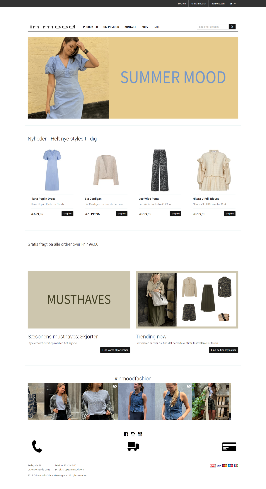
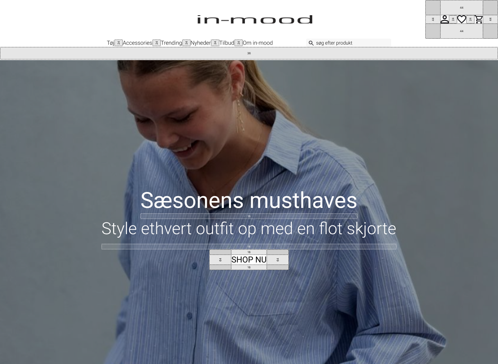
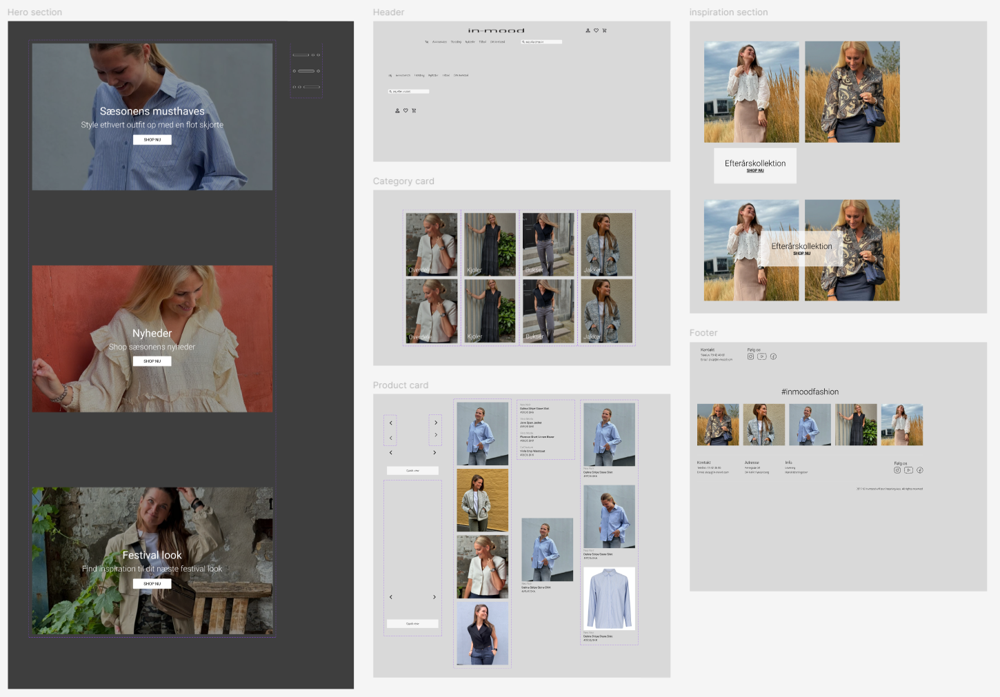

Før
Efter

Designsystemer
Jeg udviklede et designsystem i Figma med variabler for tekst og spacing for at sikre konsistens i designet. At arbejde med variabler i Figma giver mulighed for hurtigere justeringer og lettere opdateringer, da ændringer automatisk kan anvendes på tværs af komponenter.
Autolayout
For at forbedre effektiviteten i designprocessen integrerede jeg Auto Layout i Figma. Auto Layout muliggør responsive komponenter, der automatisk tilpasser sig indhold og sikrer konsistent spacing og alignment. Ved at kombinere Auto Layout med designsystemets variabler kan jeg hurtigt justere designs, hvilket letter overgangen fra design til udvikling.
Components
For at forbedre designprocessen fokuserede jeg på at oprette components i Figma. Components muliggør genbrug af designelementer, hvilket sikrer konsistens og sparer tid ved opdateringer. Ved at ændre én instans kan jeg hurtigt justere det overordnede design, hvilket gør overgangen fra design til udvikling mere effektiv og opretholder et ensartet udtryk i projektet.
Animationer
At lave animationer i Figma forbedrer brugeroplevelsen ved at skabe dynamiske og engagerende interaktioner. Dette gør det lettere at eksperimentere med bevægelser og kommunikere designideen til udviklingsteamet.
Brugen af animationer og microinteractions på hjemmesider fremhæver handlinger og giver direkte feedback til brugerne. Dette øger engagementet ved at gøre navigationen mere intuitiv og hjælper med at fokusere opmærksomheden på vigtige elementer, hvilket forbedrer chancerne for interaktion.